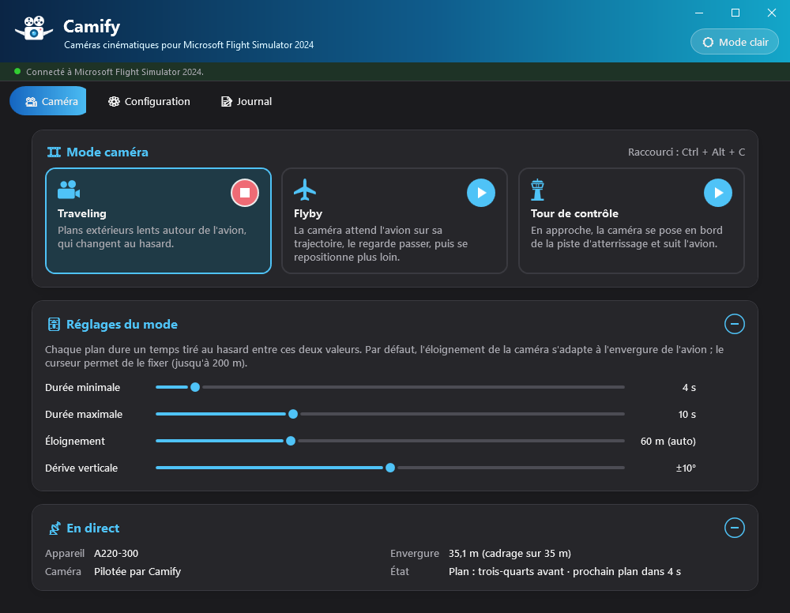
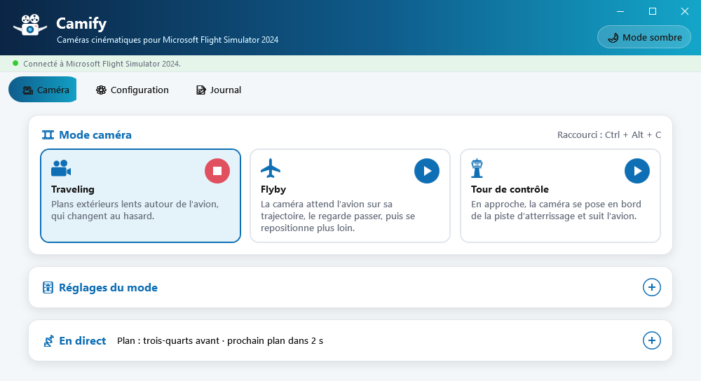
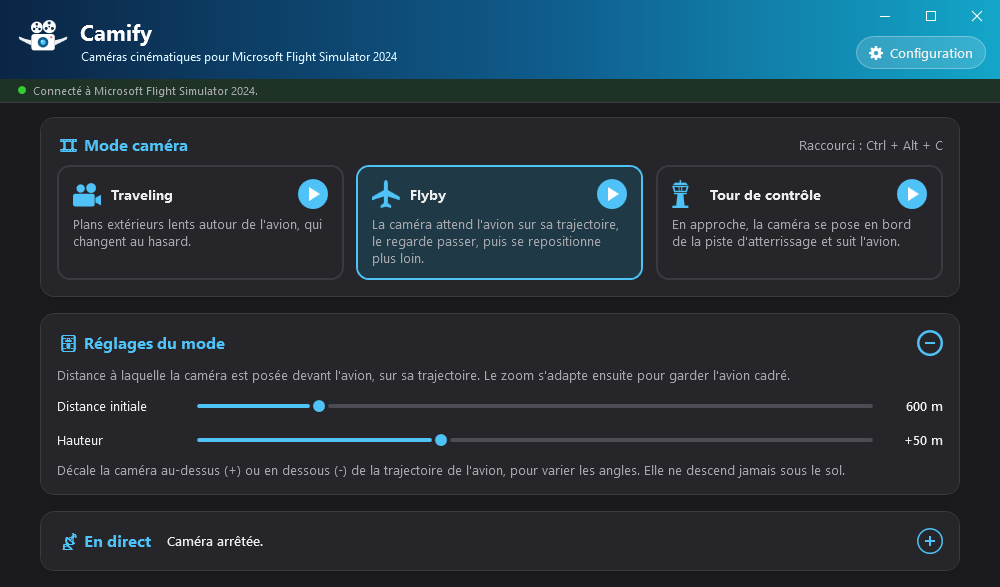
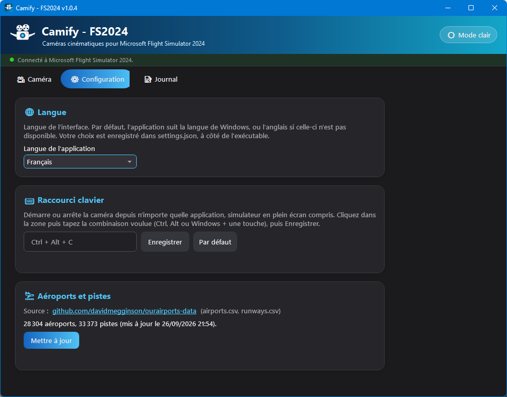
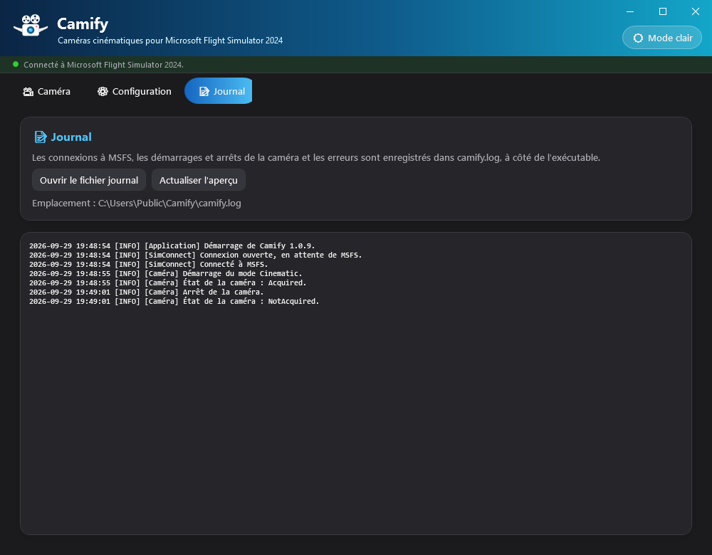

🎥 1. Présentation
Ce que fait Camify, et pour qui.
Camify est une application Windows autonome qui pilote la caméra de Microsoft Flight Simulator 2024 pour filmer votre avion comme au cinéma, pendant que vous pilotez ou que le pilote automatique vole pour vous. Elle passe par l'API caméra de SimConnect, l'interface officielle du simulateur : aucun mod à installer dans MSFS.
Trois modes caméra, chacun lancé d'un clic ou d'un raccourci clavier :
- Traveling : des plans extérieurs lents autour de l'avion, tirés au hasard (trois-quarts avant, profil, plongée, vues de dessous et du dessus, poursuite…) ;
- Flyby : la caméra attend l'avion sur sa trajectoire, le regarde passer, puis se repositionne plus loin ;
- Tour de contrôle : en approche, la caméra se pose en bord de la piste d'atterrissage et suit votre atterrissage.
Camify ne pilote jamais l'avion et n'enregistre pas de vidéo : il place la caméra du simulateur. Pour garder une trace, utilisez votre outil de capture habituel (par exemple la Xbox Game Bar de Windows, Win + Alt + R).
🚀 2. Installation et premier lancement
Un seul fichier à télécharger, rien à installer.
- Téléchargez
Camify.exedepuis la page des versions : github.com/kairhosen/Camify-releases. - Placez-le dans un dossier à vous (par exemple
Documents\Camify) : l'application écrit ses fichiers à côté de l'exécutable. - Lancez-le, avant ou après MSFS 2024 : la connexion se fait toute seule.
Au tout premier démarrage, Camify télécharge automatiquement le référentiel des aéroports et des pistes (données OurAirports), nécessaire au mode Tour de contrôle. Une connexion Internet est simplement nécessaire à ce moment-là ; le référentiel se met ensuite à jour à la demande depuis l'onglet Configuration.
camify.db (aéroports et pistes),
camify.log (journal),
settings.json (langue, mode choisi, réglages des curseurs,
raccourci) et theme.txt (thème clair ou sombre). Si vous déplacez
l'exécutable, copiez-les avec lui pour conserver vos réglages.
🖥️ 3. Interface générale
La bannière, l'indicateur de connexion, les trois onglets et le thème.
- Une bannière en haut, qui sert de barre de titre : faites-la glisser pour déplacer la fenêtre, double-cliquez pour l'agrandir ou la restaurer. Les boutons réduire, agrandir et fermer sont en haut à droite ; sous Windows 11, survoler le bouton agrandir ouvre le menu d'ancrage de Windows pour placer la fenêtre sur une moitié ou un quart de l'écran, par exemple à côté du simulateur ;
- Sous ces boutons, 🌙 Mode sombre / ☀️ Mode clair bascule tout le thème de l'application (conservé d'une session à l'autre) ;
- Une barre d'état avec un point de couleur (rouge = non connecté, vert = connecté). Tant que MSFS n'est pas disponible, Camify retente la connexion toutes les 5 secondes, sans action de votre part ;
- Trois onglets : 🎥 Caméra, ⚙️ Configuration et 📝 Journal.
L'application s'affiche dans la langue de Windows si elle est disponible (français, anglais ou espagnol), et en anglais sinon. Vous pouvez en changer dans l'onglet Configuration.
Sur les onglets Caméra et Configuration, la hauteur de la fenêtre s'ajuste toute seule à ce qui est affiché (cadre déplié ou replié, mode choisi, langue) : la fenêtre reste aussi compacte que possible. Vous pouvez toujours la redimensionner par ses bords.


🎞️ 4. Onglet Caméra
Choisir un mode, le régler, le lancer — et suivre ce que fait la caméra.
Démarrer et arrêter
L'onglet présente trois cartes de mode : Traveling, Flyby et Tour de contrôle.
- Cliquer sur une carte la sélectionne et affiche ses réglages dans le cadre 🎚️ Réglages du mode, sans démarrer la caméra ;
- Le bouton rond ▶ de chaque carte démarre ce mode. Il devient ■ pendant que le mode tourne : un clic l'arrête et rend la caméra au simulateur ;
- Un seul mode joue à la fois : lancer un mode arrête celui en cours ;
- Le raccourci clavier global (Ctrl + Alt + C par défaut), rappelé à droite du titre 🎞️ Mode caméra, arrête le mode en cours ou démarre le mode sélectionné — depuis MSFS, plein écran compris.
Les réglages des curseurs sont pris en compte immédiatement, même pendant que la caméra tourne, et conservés pour la prochaine session.
Mode Traveling
Camify enchaîne des plans extérieurs tirés au hasard. Pendant chaque plan, la caméra glisse doucement (léger travelling circulaire, montée ou descente, rapprochement ou recul, zoom), avec une accélération et une décélération progressives ; le passage au plan suivant est un cut. Deux plans consécutifs ne sont jamais du même type.
| Plan | Point de vue |
|---|---|
| Trois-quarts avant | Devant l'avion, sur le côté, légèrement au-dessus |
| Profil | Sur le côté, à hauteur de l'avion |
| Trois-quarts arrière | Derrière, sur le côté, un peu au-dessus |
| Plongée | Au-dessus de l'avion |
| Contre-plongée | Sur le côté, en dessous de l'avion (en vol uniquement) |
| Vue de dessous | Presque à la verticale sous l'avion (en vol uniquement) |
| Vue du dessus | Presque à la verticale au-dessus de l'avion |
| Gros plan avant | Tout près du nez |
| Poursuite | Derrière l'avion, dans son sillage |
Réglages
- Durée minimale et Durée maximale (2 à 30 s, 4 et 10 s par défaut) : chaque plan dure un temps tiré au hasard entre ces deux valeurs. Les deux curseurs restent cohérents (le minimum ne dépasse jamais le maximum).
- Éloignement : distance moyenne de la caméra. Par défaut, elle suit l'envergure de l'appareil (un A380 est filmé de bien plus loin qu'un C172) et le curseur affiche « (auto) ». Déplacez-le pour fixer une valeur (5 à 200 m) ; le bouton Auto revient au calcul automatique. Ce choix manuel vaut pour la session et revient en automatique quand vous changez d'appareil.
- Dérive verticale (0 à 20°, 10° par défaut) : pendant chaque plan, la caméra monte ou descend de cet angle, le sens étant tiré au hasard. À 0°, la hauteur reste fixe pendant le plan ; à 20°, le mouvement vertical est bien visible.
Mode Flyby
La caméra est posée, fixe, loin devant l'avion sur sa trajectoire prévue (route, vitesse sol et vitesse verticale), légèrement décalée sur le côté. Elle suit l'avion du regard avec un zoom adapté à la distance, le regarde passer puis s'éloigner, et se repose plus loin devant lui : le plus souvent de l'autre côté de la trajectoire, à une distance et un écart un peu différents à chaque passage.
Si l'avion fait demi-tour ou vire loin de la caméra, elle est reposée devant lui. Avion arrêté au parking, elle se place à côté de lui, à hauteur d'homme.
Réglages
- Distance initiale (100 à 3 000 m, 600 m par défaut) : distance à laquelle la caméra est posée devant l'avion, à 10 % près pour varier les passages. Le zoom s'adapte ensuite pour garder l'avion cadré.
- Hauteur (−200 à +500 m, 0 par défaut) : décale la caméra au-dessus (+) ou en dessous (−) de la trajectoire, pour varier les angles. Une petite variation aléatoire s'y ajoute à chaque placement.

Mode Tour de contrôle
Démarrez ce mode à tout moment, par exemple en début de descente. Tant que l'avion n'est pas en approche, la vue du simulateur est conservée. Dès que l'avion est à moins de 3 000 ft sol et aligné sur une piste, Camify :
- cherche l'aéroport le plus proche (rayon de 20 km) et la piste d'atterrissage ;
- pose la caméra une seule fois sur le côté de la piste, au niveau de la zone de toucher, à hauteur de bâtiment (12 m) ;
- suit l'avion du regard, zoom compris, sans jamais déplacer la caméra jusqu'à l'arrêt.
Ce mode n'a pas de réglage. Il demande le référentiel des aéroports et des pistes : s'il est vide, un avertissement rouge s'affiche dans le cadre 🎚️ Réglages du mode, sous la description.
Panneau En direct
Le cadre 📡 En direct est mis à jour quatre fois par seconde. Replié, il affiche l'état de la caméra à droite de son titre (plan en cours, distance, piste…) ; déplié (bouton +), il détaille :
| Ligne | Contenu |
|---|---|
| Appareil | Nom de l'appareil chargé dans le simulateur |
| Envergure | Envergure déclarée par l'appareil, et la taille utilisée pour le cadrage (bornée si l'envergure est inconnue ou aberrante, par exemple pour un hélicoptère) |
| Caméra | « Vue du simulateur », « Pilotée par Camify », « Prise par une autre application » ou « Désactivée dans les options du simulateur » |
| État | Ce que fait le mode : plan en cours et compte à rebours (Traveling), distance de la caméra (Flyby), aéroport, piste et distance à l'axe (Tour), ou raison d'un arrêt |
Arrêts automatiques
Vous gardez toujours la main : Camify s'arrête et rend la caméra au simulateur dans les cas suivants, avec la raison affichée dans l'état.
- Vous changez de vue dans MSFS (touche de vue, joystick, menu caméra…) : Camify le détecte et s'arrête aussitôt ;
- la connexion à MSFS est perdue ;
- la caméra est déjà utilisée par une autre application ;
- les caméras des add-ons sont désactivées dans les options du simulateur ;
- une erreur survient (détails dans le Journal).
À la fermeture de Camify, la caméra est également rendue au simulateur.
⚙️ 5. Configuration
Langue, raccourci clavier et référentiel des aéroports.

🌐 Langue
Français, anglais ou espagnol. Par défaut, l'application suit la langue de Windows. Le
choix est enregistré dans settings.json.
⌨️ Raccourci clavier
Le raccourci démarre ou arrête la caméra depuis n'importe quelle application, simulateur en plein écran compris :
- cliquez dans la zone de saisie ;
- tapez la combinaison voulue : Ctrl, Alt ou Win (avec éventuellement Maj) plus une lettre, un chiffre, une touche F1–F24 ou une touche de navigation ;
- cliquez Enregistrer. Par défaut revient à Ctrl + Alt + C.
Si la combinaison est déjà prise par une autre application, Camify le signale et le rappel du raccourci indique « (indisponible) » : choisissez-en une autre.
🛬 Aéroports et pistes
Affiche le nombre d'aéroports et de pistes en base et la date de mise à jour. Le bouton
Mettre à jour retélécharge les fichiers
airports.csv et runways.csv d'OurAirports.
Seuls les grands, moyens et petits aéroports ayant au moins une piste exploitable sont
conservés.
📝 6. Journal
L'historique technique, pour diagnostiquer un problème.

camify.log.Les connexions à MSFS, les démarrages et arrêts de la caméra et les erreurs sont
enregistrés dans camify.log, à côté de l'exécutable. Deux boutons :
- Ouvrir le fichier journal — l'ouvre dans votre visionneuse de texte, pour le consulter en entier ou le joindre à un rapport de bug ;
- Actualiser l'aperçu — rafraîchit l'aperçu affiché dans l'application.
Au-delà de 5 Mo, le journal est renommé en camify.old.log (qui
remplace le précédent) et un nouveau fichier démarre.
💡 7. Astuces & bonnes pratiques
- Avec le pilote automatique, le Traveling devient un vrai film de croisière : allongez la durée des plans (15 à 30 s) pour un rendu plus contemplatif.
- Pour un flyby spectaculaire, réduisez la distance initiale (200 à 400 m) et jouez sur la hauteur : légèrement en dessous pour un passage « par en bas », bien au-dessus pour voir l'avion avec le paysage.
- Pour la tour, lancez le mode dès le début de la descente : il attend l'approche tout seul, vous n'avez plus qu'à piloter.
- Pour reprendre la main, changez simplement de vue dans MSFS ou utilisez le raccourci clavier.
- Sur un seul écran, simulateur en mode fenêtré, ancrez Camify dans un coin avec le menu d'ancrage de Windows 11 et laissez ses cadres repliés : l'état de la caméra reste lisible à droite du titre 📡 En direct.
- Avec Carnet de Vol, les deux applications peuvent tourner pendant le même vol : l'une enregistre le vol, l'autre le filme.
Fichiers de l'application
🛠️ 8. Dépannage
« Non connecté à MSFS 2024 » ne passe jamais au vert
Vérifiez que Microsoft Flight Simulator 2024 est lancé et qu'un vol est chargé. L'onglet Journal détaille les tentatives de connexion. La reconnexion est automatique toutes les 5 secondes.
« SimConnect.dll absente ou altérée »
Camify embarque le client SimConnect et vérifie son empreinte avant de le charger. Ce
message indique un exécutable abîmé ou modifié : retéléchargez
Camify.exe depuis la page officielle des versions.
La caméra est « Désactivée dans les options du simulateur »
Les caméras pilotées par des add-ons sont désactivées dans les options de MSFS 2024 : réactivez-les dans les options caméra du simulateur, puis relancez le mode.
La caméra s'arrête dès que je touche au joystick
C'est voulu si l'action change la vue dans MSFS (chapeau de vue, bouton caméra…) : Camify rend alors la main. Retirez cette affectation dans les commandes du simulateur, ou relancez le mode avec le raccourci.
Le mode Tour de contrôle reste « en attente »
L'avion doit être sous 3 000 ft sol et aligné sur une piste d'un aéroport connu à moins de 20 km. Vérifiez que le référentiel n'est pas vide (onglet Configuration) et mettez-le à jour si l'aéroport est récent.
Le raccourci clavier ne fait rien
Il est peut-être déjà utilisé par une autre application : le rappel à côté du titre indique alors « (indisponible) ». Choisissez une autre combinaison dans l'onglet Configuration.
⚖️ Annexe — Sources de données et licences
Les composants et données tiers utilisés par l'application, et leurs conditions.
| Élément | Utilisation dans l'application | Licence / conditions |
|---|---|---|
SimConnect.dll (Microsoft Flight Simulator 2024 SDK 1.7.3) |
Client SimConnect natif x64, intégré sans modification à Camify.exe
pour communiquer avec le simulateur |
© Microsoft Corporation, tous droits réservés. Fourni « tel quel », sans garantie,
et soumis aux termes de licence du Microsoft Flight Simulator SDK, joints à chaque
version sous le nom MSFS-SDK-EULA.pdf. Utilisé uniquement avec une
copie de MSFS 2024 légalement installée. |
| OurAirports (ourairports-data) | Aéroports et pistes (airports.csv, runways.csv)
pour le mode Tour de contrôle, téléchargés au premier lancement |
Domaine public (dépôt sous The Unlicense) ; fourni sans garantie d'exactitude. |
Microsoft Flight Simulator 2024, SimConnect et Windows sont des marques de Microsoft Corporation. Camify est une application indépendante : elle n'est ni affiliée à Microsoft, ni approuvée ou soutenue par Microsoft.